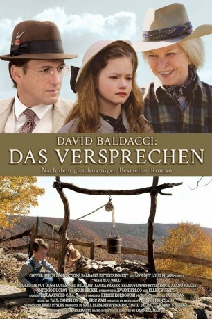

#6231 Das Versprechen
Alternativ: Wish You Well
 
 IMDB-Wertung: 6.5 / 10
IMDB-Wertung: 6.5 / 10  Metascore: 0
Metascore: 0 
New York, in den 1940er Jahren: Bei einem tragischen Unfall verunglücken die Eltern der 12-jährigen Lou und ihres kleinen Bruders Oz . Während ihr Vater sofort ums Leben kommt, wird die Mutter zum Pflegefall und ist nicht mehr ansprechbar. Für die Kinder nimmt das Leben damit eine einschneidende Wende. Sie müssen zu ihrer Ururgroßmutter ziehen, die auf einer Farm in den Bergen Virginias lebt. Lou und Oz, die bis dahin ein Leben in Wohlstand genossen, müssen nun lernen, in einem Haus zu leben, in dem es weder fließend Wasser noch Strom gibt. Allmählich gewöhnen sich die Geschwister an das neue Leben, doch dann droht auch diese heile Welt zu zerbrechen: Als Erdgas unter dem Grundstück entdeckt wird, versucht eine Bergbaugesellschaft die Anwohner um jeden Preis zu vertreiben.
Jahr: 2013
Dauer: 100 Minuten
FSK: 12
Land: USA Studio: Sony Pictures Home EntertainmentTonspuren: DD5.1 - ,
Untertitel:
Auflösung: 1080p (1920x1080) Größe: 6707 MB
Genre: Drama, Familie
Regisseur: Darnell Martin
Drehbuch: J.M. Barrie
Soundtrack:
Darsteller:
 Ellen Burstyn als Louisa Mae Cardinal
Ellen Burstyn als Louisa Mae Cardinal Mackenzie Foy als Lou Cardinal
Mackenzie Foy als Lou Cardinal Josh Lucas als Cotton Longfellow
Josh Lucas als Cotton Longfellow Ned Bellamy als George Davis
Ned Bellamy als George Davis- JP Vanderloo als Oz Cardinal
- Alano Miller als Eugene Randall
 Seamus Davey-Fitzpatrick als Diamond Skinner
Seamus Davey-Fitzpatrick als Diamond Skinner Laura Fraser als Amanda Cardinal
Laura Fraser als Amanda Cardinal- Dave Hager als Dr, Barnes
- Josh Murray als Jack Cardinal
- Keith Tyree als Judd Wheeler
- Sara Elizabeth Timmins als Private Nurse
 Graham Beckel als Thurston Goode
Graham Beckel als Thurston Goode Pete Burris als Dr. Luther Ross
Pete Burris als Dr. Luther Ross Joe Inscoe als Bakery Stand Owner
Joe Inscoe als Bakery Stand Owner- Dakota Oher als Jury foreman
- Lawrence Whitener als Fred the Bailiff
- Antonio Ducrot als Billy Davis
- Sara Eshleman als Sally Davis
- Jenny Howard als Estelle McCoy
- Larry Johnston als John
- Mikel Sarah Lambert als Elderly Lou
- Ethen Park als School Child
- Ed Sala als Judge Henry Atkins
- Rachel Camacho als Townsperson , uncredited
- Ed Easterling als Courtroom Audience Member , uncredited
- Dacy Freeman als George Davis's Daughter , uncredited
- Lindsey June als Courtroom Audience Member , uncredited
- Patty Marcey als Baptisim Scene, Courtroom Audience , uncredited
- Sari Marita Seppanen als Myrtle , uncredited
- Allen Sisler als Townsperson, Courtroom Audience Member , uncredited
Datei: X:\2013(N-Z)\Versprechen, Das (2013, FSK12, 1920x1080).mkv seit 19.05.2017
Festplatte: HD 2013(I-Z)-2014(A-Z)
 Es gibt insgesamt 133 Filme in der Gruppe '2013(N-Z)'
Es gibt insgesamt 133 Filme in der Gruppe '2013(N-Z)'